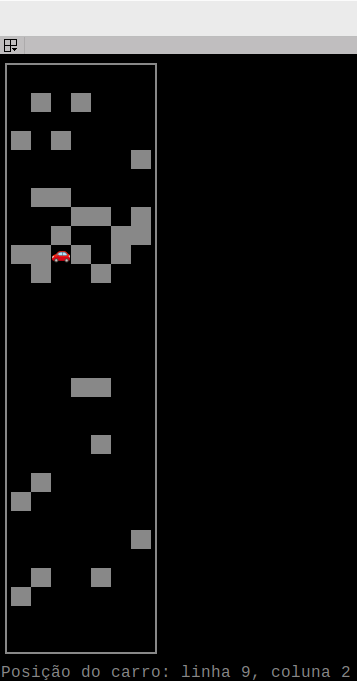

Entregável 4 de Robótica Computacional
Instruções gerais
Aviso 1: Sempre desenvolvam nos arquivos .py dos respectivos exercícios.
Aviso 2: Lembre-se de dar commit e push no seu repositório até o horário limite de entrega.
Aviso 3: Preencha o nome completo dos integrantes do seu grupo no arquivo README.md do seu repositório.
Aviso 4: Além de seu repositório, para todas as questões você deve gravar um vídeo do seu robô executando a tarefa. O vídeo deve ser feito gravando a tela do linux, tutorial, e deve ser postado no Youtube.
No arquivo README.md do seu repositório existe o campo Link do Vídeo onde você deve colocar o link do video no youtube. Certifique-se de que o vídeo está público e que o link está correto. NUNCA de commit no vídeo, somente adicione o link.
Exercício 1 (5 pontos)
Para treinar o uso de classes e funções, vamos criar um programa que simula um carro autonomo desviando de obstáculos. O carro deve ser capaz de desviar de obstáculos que estejam a sua frente, se movendo para a esquerda ou direita, e depois voltando a seguir para frente.
A parte visual do programa já está pronta, no arquivo util.py. A classe Mapa cria uma grade 2D de 30 linhas e 7 colunas, com paredes representadas por células com valor 2. O carro é representado por uma célula com valor 1, inicialmente posicionado na penúltima linha e na coluna do meio.
 A cor branca representa células com obstáculos (2), a cor vermelha representa o carro (1) e a cor preta representa células livres (0).
Instruções:
Sua tarefa é implementar a lógica de movimentação do carro usando a classe Control, que herda de Mapa. Na função control você deve verificar no mapa, se há algum obstáculo na linha de acima do carro. Se não houver obstáculo, o carro deve entrar no estado forward, modificando a variável self.robot_state para forward. Se houver obstáculo, o carro deve move para a esquerda ou direita, dependendo de onde há espaço.
As ações do carro devem achamar o método da classe Mapa atualizar_posicao, que recebe como parâmetro a ação do carro uma nova posição para o carro (y,x) ou (linhas, colunas). Quando chegar na primeira linha, o carro deve entrar no estado stop, finalizando o programa.
DICA: Note que o carro começa na ultima linha e deve chegar na primeira linha, ou seja, o valor da linha deve diminuir até chegar em 0.
Desenvolva seu código no arquivo ex1.py, na classe Control. Você pode testar seu código executando o arquivo ex1.py.
DICA: Comece verificando na onde está a posição atual do carro, em seguida, use o valor da posição no mapa, você deve ver o valor 1.
Critérios de Avaliação:
- Faz a herança da classe
Mapacorretamente. - Na função
control, implementa a lógica para escolher a ação do carro, modificando a variavelself.robot_statede acordo com a situação. - Desenvolve corretamente as ações do carro, chamando o método
atualizar_posicaoda classeMapa. - Dentro da função
control, chama corretamente a ação atraves da maquina de estados, pelo dicionárioself.state_machine. - O carro chega na primeira linha e entra no estado
stop, sem nunca ultrapassar as laterais do mapa.
A entrega será feita pelo repositório do grupo no github e por um vídeo no youtube.
Exercício 2 (5 pontos)
O objetivo deste exercício é completar os tutoriais relacionados a Linux, Simulador e Turtlebot3. Estes tutoriais são essenciais para desenvolver uma compreensão sólida das ferramentas e tecnologias que serão utilizadas nas próximas etapas do curso.
Instruções:
-
Acesse os tutoriais através do link fornecido: Guias-Infratestrutura.
-
Complete cada tutorial com atenção, seguindo todas as instruções e procedimentos detalhados.
Critérios de Avaliação:
A conclusão deste exercício será avaliada por um professor ou técnico. Para isso, você deverá demonstrar que completou cada tutorial de acordo com a planilha de checagem disponível no seguinte link: Planilha de Checagem.